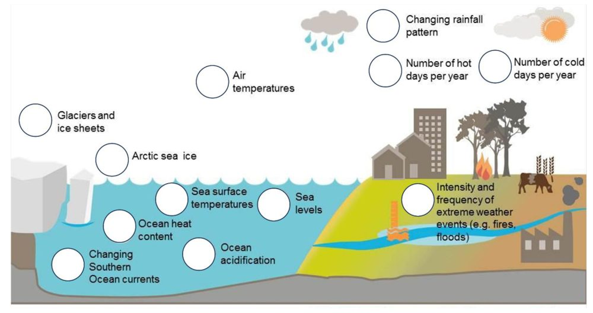
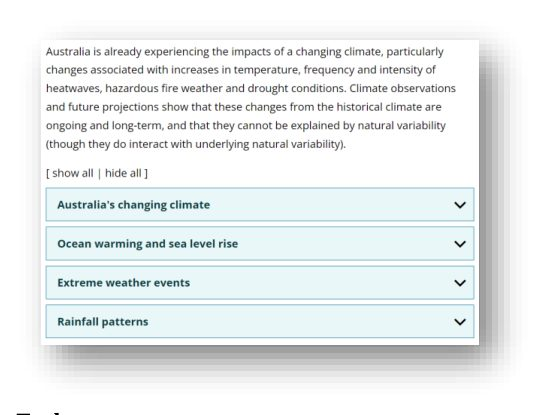
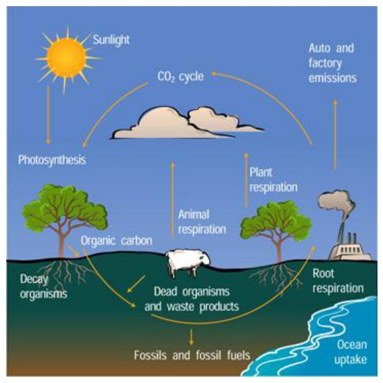
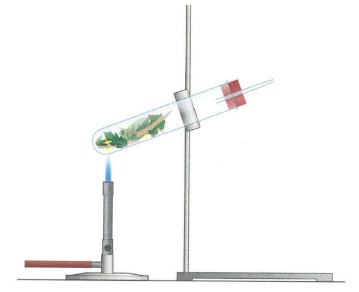
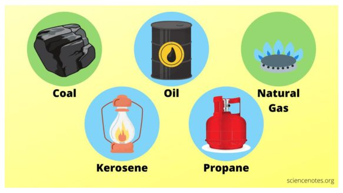
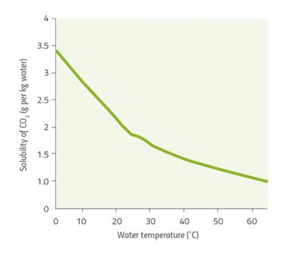
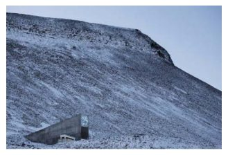
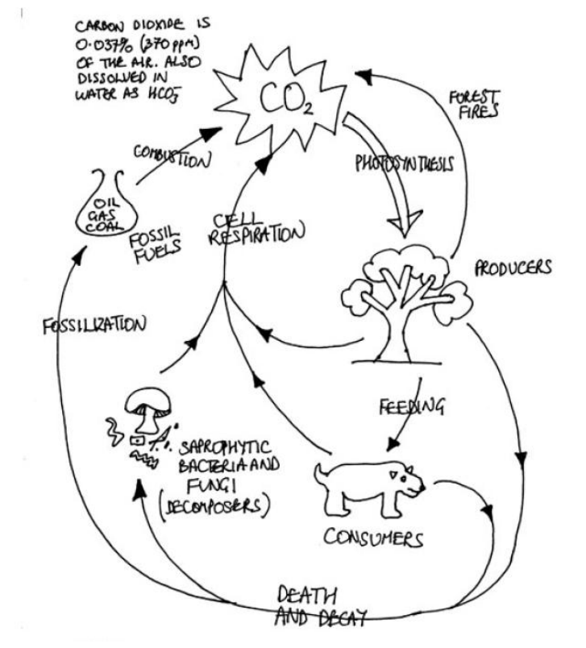

1.2 Observed effects of the enhanced greenhouse effect
The enhanced greenhouse effect has led to a range of climate and environmental changes, many of them too rapid for species (including humans) to adapt to.

For each effect in the diagram, state whether it is increasing, decreasing or changing.
Increasing: air temperatures, ocean temperatures, sea level, number of hot days per year, intensity and frequency of extreme weather events (e.g. heatwaves, bushfire weather), ocean acidification.
Decreasing: glaciers and ice sheets, Arctic sea ice, number of cold days per year.
Changing: rainfall patterns, ocean currents and locations of animal and plant species.
Media research task
Go to https://www.dcceew.gov.au/climate-change/policy/climate-science/understanding-climate-change (or https://bit.ly/DCCEWClimateScience). The page has four sections: Australia's changing climate; ocean warming and sea level rise; extreme weather events; and rainfall patterns.
Summarise one of the four sections in about 200 words, addressing:
- What evidence is there for this observed effect?
- How is the data gathered?
- Why is this effect important for our city/country?
Report back to the class with your findings.

The carbon cycle
To understand the effects of increased CO2 emissions, we need to understand the carbon cycle: how carbon moves between the atmosphere, soils, living things, the oceans and human sources.
The atmosphere holds only about 1% of the carbon, so small changes in CO2 make a big difference to the greenhouse effect.

| Carbon cycle stage | Description |
|---|---|
| Auto and factory emissions (burning fossil fuels) | When fuels are burned to release energy, their carbon is released as carbon dioxide. |
| Photosynthesis | Plants convert carbon dioxide and water into oxygen and glucose (food for their growth). |
| Dead organisms to fossils and fossil fuels | Over thousands to millions of years, fossilised plant and animal matter is converted into coal, oil and natural gas under the oceans and land, capturing carbon. |
| Plant and animal respiration | Plants and animals respire, converting oxygen and glucose into water and carbon dioxide to obtain energy. |
| Decay organisms | Bacteria and micro-organisms release carbon dioxide as dead plant and animal matter decays. |
| Ocean uptake | Carbon dioxide dissolves into lakes and oceans. |
Experiment: the carbon cycle
Aim: to investigate how carbon cycles during the burning of organic matter.

Method:
- Gather some mulch, small leaves and bark (organic matter) and put it into a test tube.
- Close the test tube with a rubber stopper with a tapered glass tube through it.
- Carefully weigh the test tube and mulch.
- Strongly heat the bottom of the test tube with a Bunsen burner for 2 minutes.
- Turn off the Bunsen burner, let the tube cool and examine the remains.
- Weigh the test tube and remains again, then calculate the change in mass and the percentage of mass lost.
Which elements is organic matter (biomass) made of?
Mainly carbon, hydrogen and oxygen (plus some nitrogen).
List the major gases emitted.
Carbon dioxide and water vapour.
Did the biomass produce pollution? What evidence do we have?
Yes: carbon dioxide, water vapour and oils were released. The oils (tar) stain the inside of the glass, and smoke may be seen.
What evidence is there of a chemical change?
A permanent colour change (the organic matter turns black/charred), smoke and gas being produced, and a loss of mass. The change can't be reversed.
Human influences on the carbon cycle
Human behaviour influences the carbon cycle in several ways, notably through burning fossil fuels and deforestation.
Fossil fuels
The industrial revolution led to a dramatic increase in the amount of fossil fuels burned. When coal (carbon in solid form) is burned, the carbon is released as carbon dioxide:
Other fossil fuels such as methane also release carbon dioxide when burned:

Deforestation
Plants act as a carbon sink through photosynthesis, converting carbon dioxide and water into oxygen and glucose.
As humans have cleared large amounts of for large-scale agriculture and cities, the net amount of carbon dioxide captured by plants has , leading to CO2 in the atmosphere.
Oceans: carbon sink, acidification and warming
- Earth's oceans are the largest sink for carbon, absorbing about 26% of all human emissions.
- Carbon dioxide dissolves into the oceans and is converted to carbonic acid and carbonates.
- Shellfish use carbonates, but increased acidity can make it harder for them to build shells.
- Warmer oceans can absorb less carbon dioxide.

Life that relies on carbonate shells and skeletons (shellfish, corals, some plankton); organisms that are sensitive to acidity; organisms higher up the food chain that feed on them; and human communities that depend on them (e.g. fishing and tourism). Organisms may adapt, but the changes are happening very fast.
Warmer water holds less dissolved CO2, so more CO2 stays in the atmosphere. This strengthens the greenhouse effect, which raises temperatures further and reduces solubility even more: a positive feedback loop. Marine life is affected too (e.g. coral bleaching, fish moving to cooler waters), along with people who rely on the ocean.
Video activity: human impact on Earth's climate
Watch How Earth Made Us: The Human Planet (56 minutes): https://clickv.ie/w/3Hgy, and answer these questions.
- For how many years have humans been farming the Earth?
- Which two gases generated by early farming had a major impact on Earth's climate?
- How long ago did humans begin harnessing the wind, and what did they do with this new power source?
- List the Earth's resources used in building an aircraft.
- How is human activity affecting the formation of sedimentary rocks?
- About 11 000 years.
- Carbon dioxide and methane, which warmed the climate.
- About 500 years ago, to sail ships and develop global trade routes.
- Bauxite (mined to make aluminium), malachite (mined to make copper), and oil (to make Perspex and plastics).
- Waste plastic flows from rivers into the ocean and settles on the bottom, where it will eventually form rock with other sediment.
- What percentage of the Earth's ice-free landscape is altered by human activity?
- About how long does it take for 2 cm of topsoil to form?
- How have humans interfered with the water cycle?
- How much oil do we use each year? How many years does it take oil to form?
- What is "rock oil", and what are the problems with exploiting it?
- About 75%.
- About 500 years.
- By diverting waterways (dams and channels) for farming and drinking water, so some water no longer reaches the ocean.
- About 31 billion barrels a year (about 84 million a day, or 1000 every second). Oil takes about 300 million years to form.
- Oil found in rocks and sand (tar sands). Exploiting it requires clearing large areas of native habitat and is expensive.
- Ancient deposits of methane gas caused global warming 55 million years ago. What were the effects, and what evidence do we have?
- How did the creation of the Himalayas affect ancient global warming?
- What trials are humans undertaking to remove excess carbon from the atmosphere?
- What is the purpose of the storage facility at Svalbard, and why is it necessary?
- Very high global temperatures, with a tropical climate in the Arctic. Evidence: fossils of ancient trees found in Arctic rock.
- Through weathering: CO2 reacted with minerals in the newly exposed rock, dissolved in water and travelled to the ocean, where microscopic organisms used it. This removed CO2 from the atmosphere, cooling the climate.
- Removing CO2 with "artificial trees", and inducing large algal blooms.
- It is a seed vault that preserves the world's food crop seeds from disasters. It is necessary because the planet's future and human food security are at risk from climate change and other factors.

Section 1.2: Key summary questions
List four key impacts of the enhanced greenhouse effect that we have observed in Australia.
- Increased overall temperatures (Australia's changing climate). 2. Ocean warming and sea level rise. 3. More frequent and intense extreme weather events. 4. Altered rainfall patterns.
What is the carbon cycle?
The carbon cycle describes how carbon moves between the atmosphere, soils, living things, the oceans and human sources.
For each stage, is carbon dioxide captured from or released into the atmosphere?
| Carbon cycle stage | Capture / release |
|---|---|
| Auto and factory emissions (burning fossil fuels) | |
| Photosynthesis | |
| Dead organisms to fossils and fossil fuels | |
| Plant and animal respiration | |
| Decay organisms | |
| Ocean uptake |
Write the word and chemical equations for photosynthesis.
carbon dioxide + water → glucose + oxygen
6CO2 + 6H2O → C6H12O6 + 6O2 (using energy from sunlight)
Write the word and chemical equations for plant and animal respiration.
glucose + oxygen → carbon dioxide + water (+ energy)
C6H12O6 + 6O2 → 6CO2 + 6H2O
List five common fossil fuels.
Any five of: coal, natural gas (methane), oil, petrol, diesel, kerosene, propane, butane.
Write the word and chemical equations for burning coal.
carbon + oxygen → carbon dioxide
C + O2 → CO2
Explain how ocean warming can be considered a positive feedback effect.
Positive feedback is when one factor in a system is reinforced by another, which then reinforces the first. The solubility of carbon dioxide decreases as water temperature increases, so warmer oceans absorb less CO2 and more stays in the atmosphere. This strengthens the enhanced greenhouse effect, warming the atmosphere and oceans further, which reduces solubility even more.
Explain what happens during each of these processes: photosynthesis, cell respiration, fossilisation, combustion, feeding and decomposition. Say which compounds the carbon atoms are found in.

Photosynthesis: plants take in carbon dioxide (CO2) from the air and use it to make glucose (C6H12O6).
Cell respiration: plants and animals break down glucose to release energy, releasing the carbon as CO2 into the air.
Feeding: carbon compounds in plants (glucose, starch, proteins) pass to consumers when they eat the plants (and to predators when they eat other animals).
Decomposition: decomposers (bacteria and fungi) break down dead organisms and wastes, releasing the carbon as CO2 through their respiration.
Fossilisation: some dead organisms are buried and, over millions of years, their carbon compounds become fossil fuels (coal, oil and natural gas).
Combustion: burning fossil fuels (or wood) combines their carbon with oxygen, releasing CO2 into the air.